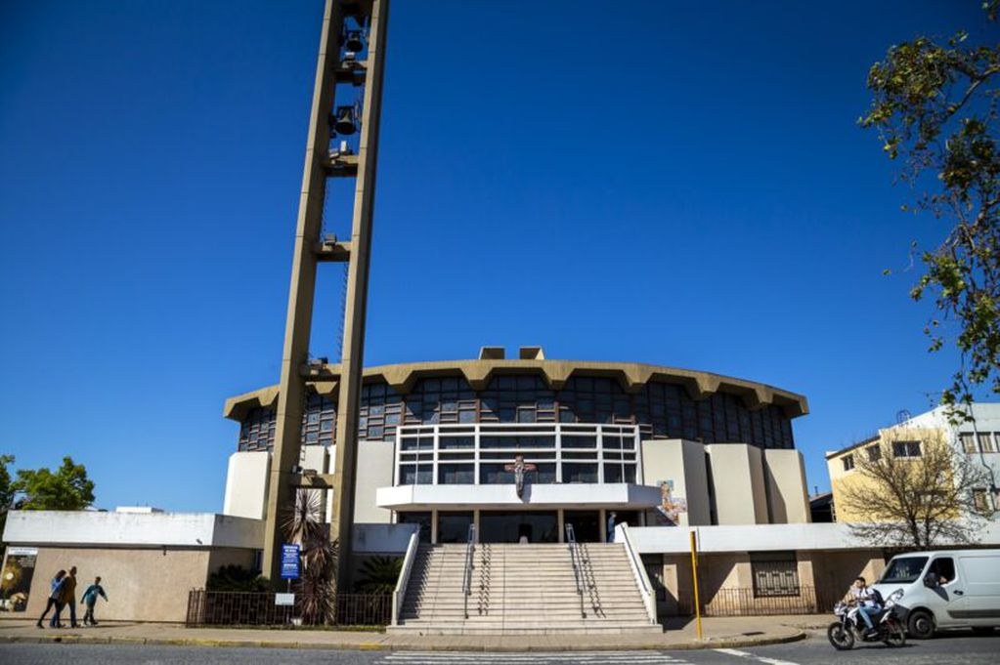

LUGARES HISTÓRICOS
PALACIO TAMPIERI

Deslumbrado por los palacios conocidos durante su niñez en Italia, el empresario Ricardo Tampieri, ya asentado en San Francisco y dueño de una imponente fábrica de fideos y galletitas, decidió a inicios de la década de 1930 construir una monumental casa. Así nació el Palacio Tampieri, un emblemático edificio de San Francisco que conserva en cada metro construido infinidades de historias.
ANTIGUOS SILOS
En pleno centro de la ciudad de San Francisco sorprende encontrarse con antiguos silos que irrumpen en la traza urbana y que pertenecen a la actividad molinera. Tal es el caso de los antiguos silos del Molino Meteoro que se encuentran ubicados en la esquina de los bulevares Buenos Aires y 25 de mayo y que se caracterizan por su color rojo.
MUSEO

El Archivo Gráfico y Museo Histórico de la Ciudad de San Francisco y la Región nació en 1996 y tiene un fondo documental integrado por fotografías, periódicos, discos, películas, DVDs, documentos y libros. Además, cuenta con una Sección Paleontológica con fósiles de la Megafauna pampeana y el Museo Histórico de vida cotidiana desde fines del Siglo XIX a fines del Siglo XX.
CATEDRAL
La parroquia San Francisco de Asís fue fundada en el año 1892, pero debió ser demolida en la década del 60 por fallas estructurales. Así, en 1983 quedó inaugurado un moderno edificio que se convirtió en la catedral de la diócesis del Departamento San Justo. Presenta un diseño único con forma de anfiteatro, campanario electrónico, vitraux y murales en el altar.
TECNOTECA
Desde su inauguración, la Tecnoteca San Francisco se ha convertido en un espacio donde convergen la tecnología, la cultura y la educación. En el lugar, los visitantes pueden interactuar con proyectos tecnológicos, participar de muestras y eventos.